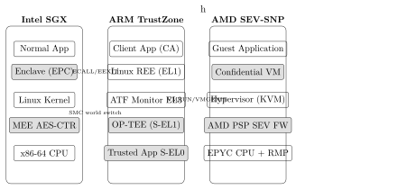

Chapter 4: Trusted Execution Environment (TEE)¶
4.1 Introduction¶
A Trusted Execution Environment (TEE) is an isolated execution environment that provides security guarantees for code and data: confidentiality (data cannot be read by untrusted software), integrity (code/data cannot be modified), and attestability (remote party can verify the TEE state). TEEs represent a critical security primitive for cloud computing, mobile payments, and IoT.
4.2 TEE Landscape¶
| Technology | Vendor | Architecture | Key Feature |
|---|---|---|---|
| SGX | Intel | x86-64 | Encrypted memory (EPC), DCAP |
| TrustZone-A | ARM | AArch64/32 | Secure/Normal world, OP-TEE |
| TrustZone-M | ARM | Cortex-M | TrustZone for microcontrollers |
| SEV-SNP | AMD | x86-64 | VM-level confidential computing |
| TDX | Intel | x86-64 | VM-level (Trust Domain) |
| CCA | ARM | v9 | Realm Management Extension |
| Keystone | RISC-V | RISC-V | PMP-based enclaves |
4.3 Intel SGX¶
4.3.1 Architecture¶
Intel SGX (Software Guard Extensions) creates protected memory regions called enclaves:
-
EPC (Enclave Page Cache): Encrypted DRAM region (up to 512MB in SGX1, GBs in SGX2)
-
MEE (Memory Encryption Engine): AES-CTR encrypts EPC contents
-
MRENCLAVE: Measurement (SHA-256) of enclave code/data
-
MRSIGNER: SHA-256 of enclave signing key
4.3.2 SGX Instructions¶
ECREATE -- Create an enclave (SECS page)
EADD -- Add page to enclave
EEXTEND -- Measure page content (extend MRENCLAVE)
EINIT -- Initialize enclave (verify SIGSTRUCT)
EENTER -- Enter enclave via TCS
EEXIT -- Exit enclave
EGETKEY -- Derive enclave-specific sealing key
EREPORT -- Generate local attestation report
4.3.3 Remote Attestation (DCAP)¶
-
Application creates enclave; SGX generates REPORT
-
Quoting Enclave signs REPORT -> QUOTE
-
QUOTE sent to Intel PCCS (certificate cache service)
-
Verifier checks QUOTE against Intel SGX Root CA
-
Trust established: Enclave is genuine Intel SGX
4.4 ARM TrustZone¶
4.4.1 TrustZone-A (Application Processors)¶
TrustZone-A partitions the system into Secure World and Normal World:
Secure World (S-EL1: OP-TEE OS, S-EL0: Trusted Apps)
<- Monitor (EL3: ARM Trusted Firmware)
Normal World (EL1: Linux kernel, EL0: Applications)
NSS bit in bus transactions:
NS=0: Secure transaction (Secure World only)
NS=1: Non-Secure transaction (Normal World)
4.4.2 OP-TEE (Open Portable TEE)¶
OP-TEE is the open-source reference implementation of TrustZone TEE:
-
GitHub:
github.com/OP-TEE/optee_os -
API: GlobalPlatform TEE API (TA API + Client API)
-
Trusted Apps: Run in S-EL0, isolated from each other via virtual MMU
4.4.3 TrustZone-M (Cortex-M33/M55)¶
For microcontrollers, TrustZone-M provides:
-
SAU (Security Attribution Unit): Configures secure/non-secure memory regions
-
Secure Entry Points: NSC (Non-Secure Callable) regions
-
No MMU required – uses MPU for isolation
4.5 AMD SEV-SNP¶
AMD SEV-SNP (Secure Encrypted Virtualization – Secure Nested Paging) provides VM-level confidential computing:
-
Memory encryption: Each VM has unique AES-128 encryption key
-
Memory integrity: RMP (Reverse Map Table) prevents hypervisor from remapping VM memory
-
Attestation: SNP Attestation Report signed by AMD SEV signing key
-
Use case: Azure Confidential VMs, GCP Confidential VMs
4.6 Confidential Computing Consortium¶
The Confidential Computing Consortium (CCC), a Linux Foundation project, standardizes TEE terminology and APIs:
-
Defines: TEE, Trusted Application (TA), Remote Attestation
-
Members: Intel, AMD, ARM, Microsoft, Google, IBM
-
Projects: Enarx (TEE-agnostic runtime), Gramine (SGX library OS), Veraison (attestation)
4.7 Attacks on TEEs¶
| Attack | Target | CVE |
|---|---|---|
| Foreshadow/L1TF | Intel SGX | CVE-2018-3615 |
| SGAxe | Intel SGX | CVE-2020-0549 |
| CrossTalk | Intel SGX | CVE-2020-0543 |
| RowHammer | TrustZone | Various |
| AEPIC Leak | Intel SGX | CVE-2022-21233 |
4.8 Standards¶
-
GlobalPlatform TEE Specification v1.0 – TEE API standard
-
IETF RFC 9334 – Remote Attestation Procedures (RATS) architecture
-
NIST IR 8320 – Hardware-Enabled Security
-
TCG DICE – Device identity for TEE attestation
4.9 FPGA TEE Implementations¶
4.9.1 Xilinx Zynq UltraScale+ TrustZone¶
The Zynq UltraScale+ MPSoC integrates ARM TrustZone-A on the Processing System (PS) side. The FPGA PL fabric is accessible from both Secure and Normal worlds via AXI buses. XMPU and XPPU enforce NS/S access on DDR and peripheral buses.
| Feature | Detail |
|---|---|
| CPU (PS) | Quad ARM Cortex-A53 (TrustZone-A) + dual Cortex-R5F |
| FPGA fabric | UltraScale+ PL (up to 1.1M LUTs on ZU19EG) |
| Secure CPU | ARM Cortex-A53 running OP-TEE at S-EL1 |
| AXI protection | TZPC controls NS bit on AXI bus from PS to PL |
| Secure boot | RSA-4096 + AES-256-GCM boot image verification |
| Crypto HW | AES-256 GCM, SHA-3/384, RSA-4096, ECC-P384 |
| OTP | eFUSEs: root key hash, RSA public key hash |
| CSU | Configuration Security Unit: first-stage hardware RoT |
| PMU | Platform Management Unit (MicroBlaze): power/reset |
| XMPU | Xilinx Memory Protection Unit: NS/S enforcement on DDR |
| XPPU | Xilinx Peripheral Protection Unit: NS/S on peripherals |
4.9.2 AMD Kria K26 SOM¶
The AMD Kria K26 System-on-Module is built on Zynq UltraScale+ (XCZU5EV) for embedded AI and edge security:
-
Form factor: 26mm x 26mm SOM; mounts on KV260 or KR260 carrier board
-
FPGA resources: 256K LUTs, 144 DSPs, 144 BRAMs, 1.5Mb URAMs
-
TrustZone: Full ARM TrustZone-A on Cortex-A53 quad-core PS
-
TEE stack: OP-TEE OS + Xilinx secure boot + PetaLinux
-
Use case: Edge AI inference with ML model protection in TEE; secure OTA firmware update
4.9.3 Intel SoC FPGA (Cyclone V SoC) HPS TrustZone¶
Intel Cyclone V SoC integrates a Hard Processor System (HPS) with dual ARM Cortex-A9 and TrustZone-A:
| Feature | Detail |
|---|---|
| CPU | Dual ARM Cortex-A9 MPCore with TrustZone-A |
| FPGA | Cyclone V FPGA fabric (up to 301K LEs) |
| HPS-FPGA bridge | AXI-3 HPS2FPGA and FPGA2HPS bridges |
| Secure World | EL3: ARM Trusted Firmware (ATF), S-EL1: OP-TEE |
| Normal World | EL1: Linux 5.x, EL0: Rich OS Applications |
| L2 cache | 512KB shared, NSS-bit partitioned |
| Boot chain | ROM -> SPL -> U-Boot -> Linux, RSA-2048 verified |
| SDRAM firewall | Registers restrict NS access to Secure regions |
4.10 ASIC TEE Implementations¶
4.10.1 Apple Secure Enclave (A17 Pro, 7nm)¶
The Apple Secure Enclave Processor (SEP) is a dedicated security subsystem in every Apple device since iPhone 5s:
-
CPU: Custom ARM-based processor (Cortex-M class ISA), physically isolated from Application Processor
-
Process node: 7nm on A17 Pro (iPhone 15 Pro); 3nm on A18 (iPhone 16)
-
Memory: Dedicated encrypted RAM, hardware-separated from AP memory bus via hardware firewall
-
Crypto engines: AES-256, ECC-P256/P384, SHA-2/3, TRNG (DRBG seeded from ring oscillators)
-
Boot: Immutable SEP Boot ROM -> SEP firmware (signed, verified before execution)
-
Keys: UID key (unique per device, blown at manufacture, never exported even to Apple)
-
Biometrics: Face ID and Touch ID templates stored and matched exclusively inside SEP
-
Attestation: SEP signs attestation statements for Apple KeyChain, Apple Pay, SE Attestation for MDM
4.10.2 Qualcomm Secure Processing Unit (Snapdragon 8 Gen 3)¶
The Qualcomm SPU is an isolated ARM Cortex-M core within the Snapdragon SoC:
-
Architecture: Dedicated ARM Cortex-M security processor; hardware memory firewall from AP
-
TEE OS: Qualcomm QTEE v5 (GlobalPlatform TEE Internal Core API v1.3.1 compliant)
-
Crypto: AES-256, RSA-4096, ECC-P256/P384, SHA-3, TRNG
-
Storage: Secure RPMB-backed replay-protected storage for tokens and biometric templates
-
Use cases: Fingerprint matching, Widevine L1 DRM, SIM authentication, Qualcomm Mobile Security
-
Separation: Hardware TZASC (TrustZone Address Space Controller) and XPU memory firewall
4.10.3 Samsung Knox Vault (Titan M2-equivalent)¶
Samsung Knox Vault (Galaxy S21+) implements a dedicated Secure Element physically separate from the AP:
-
Hardware: Separate security SoC (ARM SC300 core) + dedicated SRAM + embedded flash; own power supply
-
Isolation: Physical bus separation; no shared cache or DRAM with Application Processor
-
Crypto: AES-256, RSA-2048/4096, ECC-P256, ECDSA, SHA-256/512, hardware TRNG
-
Storage: Replay-protected secure storage for biometric templates, Samsung Pay tokens, lockscreen credentials
-
Certification: Common Criteria EAL 5+, FIPS 140-2 Level 3 hardware module
-
Attestation: Knox Attestation API: ECDSA-signed report of device security state for Android Enterprise MDM
4.10.4 MediaTek TEE: TEEGRIS and Kinibi¶
MediaTek Dimensity SoCs implement TrustZone-A with either Trustonic Kinibi or Samsung TEEGRIS:
-
TrustZone: ARM Cortex-A cores; Monitor at EL3 (ATF); TEE OS at S-EL1
-
TEEGRIS: Samsung in-house TEE OS, GlobalPlatform compliant; Dimensity 9300+ and Exynos
-
Kinibi: Trustonic TEE; Dimensity 1200/9000 class; GP TEE API v1.2 compliant
-
Trustlets: Trusted Applications for fingerprint, DRM (Widevine L1), NFC payment
-
Crypto HW: Hardware AES, SHA, RSA accelerator accessible from Secure World via ARM SMC
4.11 TEE Software Solutions Reference¶
| Solution | TEE Target | License | Repository |
|---|---|---|---|
| Intel linux-sgx | Intel SGX | BSD | github.com/intel/linux-sgx |
| OP-TEE (Linaro) | ARM TrustZone | BSD-2 | github.com/OP-TEE/optee_os |
| AMD SEV-SNP tool | AMD SEV-SNP | Apache 2 | github.com/AMDESE/sev-tool |
| Apple Secure Enclave | iOS/macOS SEP | Closed | developer.apple.com |
| Qualcomm QTEE | Snapdragon SPU | Closed | qualcomm.com |
| Samsung Knox Vault | Galaxy S21+ SE | Closed | samsung.com/knox |
| Trustonic Kinibi | ARM TrustZone | Commercial | trustonic.com |
| Huawei iTrustee | HiSilicon Kirin TEE | Closed | developer.huawei.com |
| Prove&Run ProvenCore | Formal ARM TEE | Commercial | provenrun.com |
| Sierraware SierraTEE | ARM TrustZone | Commercial | sierraware.com |
| Microsoft Pluton | AMD/Intel/Qualcomm | Closed | microsoft.com/security/pluton |
| RISC-V Keystone | RISC-V PMP | BSD | github.com/keystone-enclave |
| Gramine (LibOS) | Intel SGX | LGPL | github.com/gramineproject/gramine |
| Enarx | SGX/SEV-SNP/TDX | Apache 2 | github.com/enarx/enarx |
| Teaclave (rustSGX) | Intel SGX | Apache 2 | github.com/apache/incubator-teaclave |
4.12 TEE Architecture Comparison Diagram¶

4.13 Advanced Attacks on TEEs¶
4.13.1 SGX-Step: Controlled Page Fault Single-Stepping¶
github.com/jovanbulck/sgx-step exploits the fact that SGX does not protect against page fault injection by an untrusted OS:
-
Mechanism: Attacker clears present-bit (P=0) on enclave PTE; CPU raises #PF on each instruction; APIC timer provides single-instruction granularity
-
Effect: Single-step execution reveals instruction-level memory access pattern and enclave control flow
-
Exploit: Recover AES T-table lookup key-dependent indices; reveal RSA square-and-multiply private key bit sequence
-
Mitigation: SGX2 EMODPR/EACCEPT removes untrusted OS from PTE management; no complete fix for SGX1
4.13.2 CacheOut (CVE-2020-0549)¶
CacheOut (L1D Eviction Sampling) enables reading SGX enclave data via speculative L1D cache eviction:
-
Root cause: Speculative writes to L1D fill buffer leak stale data across privilege boundary
-
Impact: Cross-SGX-enclave and cross-VM data leakage; bypasses memory encryption (data leaked in plaintext in cache)
-
Mitigation: Microcode update + VERW instruction to flush fill buffers on privilege transition; Linux kernel 5.10+
4.13.3 LVI: Load Value Injection (CVE-2020-0551)¶
LVI is the inverse of Meltdown: inject attacker-controlled values into SGX enclave via speculative loads:
-
Mechanism: CPU speculatively uses stale fill-buffer or store-buffer value during enclave load; attacker data transiently used in enclave computation
-
Effect: Redirect enclave control flow speculatively; extract secrets via dependent timing measurement
-
Mitigation: LFENCE after every load in enclave code (up to 19x overhead); compiler flag
-mindirect-branch=thunk
4.13.4 SGX AEPIC Leak (CVE-2022-21233)¶
Architectural (non-side-channel) leak of enclave data via uninitialized xAPIC MMIO registers:
-
Root cause: Reading certain xAPIC MMIO registers in legacy memory-mapped mode returns stale data from internal CPU register files
-
Impact: Approx. 16 bytes of enclave stack/heap per read; requires ring-0 privilege; direct architectural read
-
Mitigation: Disable xAPIC MMIO; enforce x2APIC mode via BIOS/kernel; Intel microcode update for affected Xeon SKUs
4.13.5 PLATYPUS: Power Side-Channel on Intel SGX (CVE-2020-8694)¶
Unprivileged Intel RAPL interface enables software-only power analysis of SGX enclaves:
-
Mechanism: Read
/sys/class/powercap/intel-raplenergy counter before and after ECALL; compute delta-E; apply CPA with AES key hypothesis -
Impact: Full AES-NI key recovery; full RSA key recovery; no physical access; no root required on pre-5.10 Linux
-
Mitigation: Restrict RAPL to root;
kernel.perf_event_paranoid=3; Intel microcode disables unprivileged RAPL; Linux 5.10 patchesintel_rapl_commondriver
4.13.6 TrustZone Cache Timing Attacks¶
TrustZone world switches do not flush the shared L1/L2 cache by default, enabling PRIME+PROBE attacks:
-
Mechanism: Normal World PRIME-fills L1 cache sets; TA executes AES T-table lookup T[p[i] XOR k[i]] evicting primed lines; PROBE measures miss latency
-
Recovery: Since plaintext p[i] is known (chosen-plaintext), key byte k[i] = observed index XOR p[i]
-
Mitigation: (1) Flush L1 on world switch (3–5 us penalty); (2) ARMv8 AESE/AESMC hardware AES (register-to-register); (3) HACL* or BearSSL constant-time AES
4.14 Code Examples¶
4.14.1 Intel SGX ECALL/OCALL Example (C)¶
/* enclave.edl -- Enclave Definition Language interface */
enclave {
trusted {
public int ecall_seal_data(
[in, size=len] const uint8_t *pt, size_t len,
[out, size=512] uint8_t *out,
[out] size_t *out_len
);
};
untrusted {
void ocall_log([in, string] const char *msg);
};
};
/* enclave.c -- Trusted code inside SGX enclave */
#include "sgx_tseal.h"
#include "enclave_t.h"
int ecall_seal_data(const uint8_t *pt, size_t len,
uint8_t *out, size_t *out_len) {
uint32_t sz = sgx_calc_sealed_data_size(0, (uint32_t)len);
if (sz > 512) return -1;
sgx_status_t r = sgx_seal_data(
0, NULL, (uint32_t)len, pt, sz, (sgx_sealed_data_t*)out);
*out_len = sz;
return (r == SGX_SUCCESS) ? 0 : -1;
}
/* app.c -- Untrusted host application */
#include "sgx_urts.h"
#include "enclave_u.h"
int main(void) {
sgx_enclave_id_t eid;
sgx_create_enclave("enclave.signed.so", 1, NULL, NULL, &eid, NULL);
uint8_t sealed[512]; size_t slen = 0; int rv = 0;
ecall_seal_data(eid, &rv, (uint8_t*)"secret", 6, sealed, &slen);
sgx_destroy_enclave(eid);
return 0;
}
4.14.2 OP-TEE Trusted Application Development Skeleton (C)¶
/* ta_entry.c -- OP-TEE TA (GlobalPlatform TEE Internal Core API v1.3.1) */
#include <tee_internal_api.h>
TEE_Result TA_CreateEntryPoint(void) {
DMSG("TA loaded into Secure World");
return TEE_SUCCESS;
}
void TA_DestroyEntryPoint(void) { DMSG("TA unloaded"); }
TEE_Result TA_OpenSessionEntryPoint(uint32_t pt,
TEE_Param p[4], void **sess_ctx) {
(void)pt; (void)p; *sess_ctx = NULL;
DMSG("Session opened from Normal World CA");
return TEE_SUCCESS;
}
TEE_Result TA_InvokeCommandEntryPoint(void *sess,
uint32_t cmd, uint32_t pt, TEE_Param p[4]) {
switch (cmd) {
case 0x0001: { /* CMD_AES256_GCM_ENCRYPT */
TEE_OperationHandle op = TEE_HANDLE_NULL;
TEE_AllocateOperation(&op, TEE_ALG_AES_GCM, TEE_MODE_ENCRYPT, 256);
/* TEE_SetOperationKey, TEE_AEInit, TEE_AEEncryptFinal */
TEE_FreeOperation(op);
return TEE_SUCCESS;
}
default: return TEE_ERROR_NOT_SUPPORTED;
}
}
void TA_CloseSessionEntryPoint(void *sess) { (void)sess; }
4.14.3 AMD SEV-SNP Attestation Report Parsing (Python)¶
#!/usr/bin/env python3
"""Parse AMD SEV-SNP attestation report (AMD ABI Table 21 v1.55)"""
import struct, json, sys
SNP_REPORT_SIZE = 0x4A0 # 1184 bytes
def parse_snp_report(raw: bytes) -> dict:
if len(raw) < SNP_REPORT_SIZE:
raise ValueError(f"Short report: {len(raw)}")
version, guest_svn = struct.unpack_from("<II", raw, 0)
policy = struct.unpack_from("<Q", raw, 8)[0]
measurement = raw[0x38:0x38+48].hex() # SHA-384 of guest FW
host_data = raw[0x68:0x68+32].hex() # 32-byte host nonce
chip_id = raw[0x1A0:0x1A0+64].hex()
sig_r = raw[0x2A0:0x2A0+48].hex() # ECDSA-P384 R (little-endian)
sig_s = raw[0x2E8:0x2E8+48].hex() # ECDSA-P384 S
return {"version": version, "guest_svn": guest_svn,
"policy": hex(policy), "measurement": measurement,
"host_data": host_data, "chip_id": chip_id,
"sig_r": sig_r, "sig_s": sig_s}
def verify_vcek(report_bytes: bytes, vcek_pem: str) -> bool:
from cryptography import x509
from cryptography.hazmat.primitives.asymmetric.ec import ECDSA
from cryptography.hazmat.primitives.hashes import SHA384
from cryptography.hazmat.primitives.asymmetric.utils import encode_dss_signature
cert = x509.load_pem_x509_certificate(vcek_pem.encode())
signed = report_bytes[:0x2A0]
r = int.from_bytes(report_bytes[0x2A0:0x2C8], "little")
s = int.from_bytes(report_bytes[0x2E8:0x310], "little")
sig = encode_dss_signature(r, s)
try:
cert.public_key().verify(sig, signed, ECDSA(SHA384()))
return True
except Exception as e:
print(f"Verify failed: {e}"); return False
if __name__ == "__main__":
raw = open(sys.argv[1], "rb").read(SNP_REPORT_SIZE)
print(json.dumps(parse_snp_report(raw), indent=2))
if len(sys.argv) > 2:
ok = verify_vcek(raw, open(sys.argv[2]).read())
print("Signature VALID" if ok else "Signature INVALID")
4.15 Standards and Specifications¶
-
GlobalPlatform TEE v1.3.1: TEE System Architecture, Internal Core API, Client API – normative API for TrustZone Trusted Applications
-
CCC (Confidential Computing Consortium): Linux Foundation project governing Gramine, Enarx, Occlum, Veraison; defines TEE and attestation terminology
-
IETF RATS RFC 9334: Remote Attestation Procedures; Attester, Verifier, Relying Party, Endorser, Reference Value Provider; passport and background-check models
-
IETF EAT RFC 9542: Entity Attestation Token – CBOR/COSE token format for attestation evidence transport
-
TCG DICE Architecture: Device Identifier Composition Engine – layered device identity for TEE boot chain
-
NIST IR 8320: Hardware-Enabled Security: TEE and hardware RoT for confidential computing in federal environments
4.16 Key GitHub Repositories¶
-
github.com/intel/linux-sgx– Intel SGX SDK and PSW for Linux -
github.com/gramineproject/gramine– Gramine: SGX library OS; runs unmodified Linux applications in SGX enclaves -
github.com/enarx/enarx– Enarx: TEE-agnostic WebAssembly runtime targeting SGX, SEV-SNP, and TDX -
github.com/OP-TEE/optee_os– OP-TEE OS: ARM TrustZone reference TEE implementation (Linaro) -
github.com/keystone-enclave/keystone– Keystone: RISC-V PMP-based enclave framework with customizable Security Monitor -
github.com/AMDESE/sev-tool– AMD SEV-SNP tool: attestation report retrieval, VCEK cert fetch, report verification -
github.com/apache/incubator-teaclave– Teaclave (rustSGX): Rust SGX SDK and Function-as-a-Service TEE platform
4.17 Solved Problems¶
Solved Problem: SGX Enclave Memory: EPC Size Constraint and Paging Overhead
An application developer wants to process a 2 GB dataset inside an Intel SGX v1 enclave for privacy-preserving analytics. Explain the EPC limitation and describe how the developer should handle data exceeding EPC size. What is the performance impact?
Solution: Intel SGX version 1 restricts the Enclave Page Cache (EPC) to a maximum of 128 MB (some BIOS/SKU configurations: 256 MB). Any enclave memory beyond the EPC limit must be paged out by the untrusted OS memory manager. When an EPC page is evicted:
-
The MEE (Memory Encryption Engine) encrypts the page with AES-CTR and computes a MAC (GHASH or AES-CMAC) to ensure integrity on reload.
-
The encrypted + MAC page is written to regular untrusted DRAM outside the EPC.
-
On re-access, the page is loaded back, decrypted, and MAC-verified by MEE before the enclave can use it.
For a 2 GB dataset with 128 MB EPC, the working set exceeds EPC by 16x. Random access causes nearly every operation to trigger an EPC page fault. Measured overhead: 3–100x slowdown depending on access pattern.
Developer solutions:
-
Upgrade to SGX2 (Icelake+ Xeon): EPC up to 512 GB;
EAUGallows dynamic EPC page addition without recreating the enclave. -
Partition: split 2 GB into 100 MB chunks; use OCALL to request each chunk from untrusted host memory; process one chunk at a time inside EPC.
-
Use Gramine SGX library OS: its built-in virtual memory manager handles EPC paging transparently for unmodified applications.
-
Apply streaming algorithms (one-pass statistics, MapReduce-style processing) to minimize simultaneous EPC working set.
Solved Problem: OP-TEE Trusted Application: Device-Unique AES-256 Key Derivation
Implement an OP-TEE Trusted Application that derives a device-unique AES-256 key from the Hardware Unique Key (HUK). The key must never leave the Secure World. Describe the full approach using the GlobalPlatform TEE Internal Core API.
Solution: The HUK is accessible only to OP-TEE at S-EL1 via the platform abstraction layer (PAL). On Xilinx Zynq, the HUK is stored in eFUSE registers accessible only at EL3/S-EL1.
Step 1: Invoke OP-TEE System PTA PTA_SYSTEM_DERIVE_TA_UNIQUE_KEY to get a 32-byte HKDF output bound to the TA UUID.
uint8_t ta_secret[32];
invoke_system_pta_derive_key(ta_secret, sizeof(ta_secret));
TEE_ObjectHandle hkdf_key, aes_key_handle;
TEE_Attribute hkdf_attr;
TEE_AllocateTransientObject(TEE_TYPE_HMAC_SHA256, 256, &hkdf_key);
TEE_InitRefAttribute(&hkdf_attr, TEE_ATTR_SECRET_VALUE, ta_secret, 32);
TEE_PopulateTransientObject(hkdf_key, &hkdf_attr, 1);
TEE_DeriveKey(hkdf_key, &context_attr, 1, aes_key_handle);
TEE_StorageHandle sh;
TEE_CreatePersistentObject(TEE_STORAGE_PRIVATE,
"enc_key_v1", 10, TEE_DATA_FLAG_ACCESS_WRITE,
aes_key_handle, NULL, 0, &sh);
TEE_CloseObject(sh);
Security properties: HUK never crosses the Secure/Normal world boundary. Derived key is bound to device HUK and TA UUID. TEE Secure Storage uses AES-GCM encryption; RPMB provides hardware replay protection.
Solved Problem: AMD SEV-SNP vs Intel TDX: Four-Dimension Comparison
Compare AMD SEV-SNP and Intel TDX in terms of: (a) threat model, (b) memory encryption granularity, (c) attestation mechanism, and (d) VM live migration support.
Solution: (a) Threat Model: Both protect VM workloads from a compromised hypervisor/VMM. SEV-SNP additionally defends against malicious host BIOS and DMA attacks (IOMMU + RMP). Intel TDX introduces the TDX Module at SEAM privilege level above the hypervisor, providing architectural isolation.
(b) Memory Encryption:
-
AMD SEV-SNP: AES-128 per VM via AMD SME/TSME key table; RMP enforces one physical page -> one ASID ownership; prevents hypervisor aliasing at 4 KB granularity.
-
Intel TDX: AES-128-XTS per Trust Domain via MK-TME; physical address KEYID bits carry the TD key ID; TD page attribute bits prevent hypervisor from remapping TD pages.
(c) Attestation:
-
AMD SEV-SNP: AMD PSP generates SNP Attestation Report signed by VCEK (P-384 ECDSA); VCEK certificate from AMD KDS (
kdsintf.amd.com); MEASUREMENT = SHA-384 of initial guest memory; HOST_DATA carries verifier nonce. -
Intel TDX: TDX Module generates TD Quote signed by TDX Quoting Enclave (P-256 ECDSA); verified against Intel PCK via PCCS; MRTD = SHA-384 of initial TD state; RTMR[0..3] are runtime extend registers.
(d) VM Live Migration:
-
AMD SEV-SNP: Secure live migration via Migration Agent TA; encrypted pages re-keyed with destination PSP key; source and destination PSPs mutually authenticate.
-
Intel TDX: TD live migration in TDX Module 1.5 (Granite Rapids); TD Migration Agent Module handles key transfer; attestation MRTD preserved; RTMRs must be re-extended post-migration.
Solved Problem: TrustZone PRIME+PROBE Cache Timing Attack and Mitigations
Describe how a PRIME+PROBE cache timing attack against an OP-TEE TA performing AES-128 with T-tables works. Propose two mitigations with their performance tradeoffs.
Solution: Attack mechanics:
-
PRIME: Normal World attacker fills L1 D-cache sets corresponding to the Secure World AES T-table virtual addresses (4 tables x 1024 bytes = 4096 bytes spanning specific cache sets).
-
TRIGGER: Attacker calls
TEEC_InvokeCommand; OP-TEE switches to S-EL1; TA executes round-1 AES lookupT[p[i] XOR k[i]]for i in 0..15. Each lookup evicts attacker data from specific L1 cache sets. -
PROBE: On return, attacker measures access time to each primed cache line. Cache miss reveals the T-table index used.
-
Key recovery: Since attacker controls plaintext p[i] (chosen-plaintext),
k[i] = observed_index XOR p[i]. All 16 key bytes recovered in roughly 200 invocations.
Mitigation 1 – Constant-time bitsliced AES: Replace T-table AES with bitsliced AES (HACL*, BearSSL ct-AES). All loads are fixed; access pattern is data-independent. Tradeoff: 2–5x slower than T-table AES.
Mitigation 2 – ARMv8 hardware AES instructions: Use AESE/AESD/AESMC intrinsics on Cortex-A53+ (ARMv8-A). AES rounds execute in vector registers; no memory loads after key schedule; immune to cache timing. Tradeoff: Requires ARMv8 hardware; still potentially vulnerable to power side-channel.
Solved Problem: Keystone RISC-V Enclave: PMP Configuration and Limits
Explain how Keystone uses RISC-V Physical Memory Protection (PMP) to implement enclave isolation. How many PMP entries are required per enclave, and what limits simultaneous enclaves on a SiFive U74?
Solution: RISC-V PMP: Hardware-enforced memory access control at Machine mode. Each PMP entry specifies pmpaddr (address), pmpcfg byte (R/W/X bits, address matching mode NAPOT/TOR/NA4, Lock bit L). Entries are checked in priority order; first match wins.
Keystone PMP layout for one enclave:
Entry 0 [LOCKED]: Security Monitor (SM) region
pmpcfg = L | NAPOT | R=0 | W=0 | X=0
Effect: No S-mode or U-mode code can access SM memory
Entry 1 [per-enclave]: Enclave physical memory (code + stack + heap)
pmpcfg = NAPOT | R=1 | W=1 | X=1
Effect: Enclave S/U-mode can access; OS (S-mode) cannot
Entry 2 [per-enclave]: UTM -- Untrusted Shared Memory for OCALLs
pmpcfg = NAPOT | R=1 | W=1 | X=0
Effect: Both enclave and OS can R/W (no execute)
Entry 15 [catch-all]: Full DRAM for OS
pmpcfg = NAPOT | R=1 | W=1 | X=1
Entries per enclave: 3 (SM entry is shared). With 16 PMP total, 2 reserved: max \(14 / 3 \approx 4\) simultaneous enclaves on a 16-entry platform.
SiFive U74 (HiFive Unmatched): 8 PMP entries. Maximum: \(8 / 3 = 2\) simultaneous Keystone enclaves. RISC-V Smepmp extension (64 PMP entries) would enable 20+ concurrent enclaves.
Critical gap vs SEV-SNP: Keystone does not encrypt enclave DRAM. Cold-boot attack or DRAM bus probing reveals enclave data in plaintext. AMD SEV-SNP AES-128 memory encryption prevents this class of physical attack.
4.18 Recent Developments (2024–2026)¶
4.18.1 ARM CCA: Realm Management Extension (RMEv1)¶
ARM Confidential Compute Architecture (CCA) introduces a fourth world – the Realm – alongside Secure, Non-Secure, and Root worlds. CCA is available in Cortex-A710, A715, and X3 cores (ARMv9.2-A), and the RME hardware shipped in Apple A17 Pro (iPhone 15 Pro) and select Qualcomm Snapdragon 8 Gen 3 devices:
-
Realm Management Monitor (RMM): Executes at the new EL2 Realm exception level; manages Realm VMs; implemented by open-source
tf-rmm(Trusted Firmware RMM) -
Granule Protection Table (GPT): Hardware-enforced per-granule (4 KB) access control table managed by firmware; prevents Normal World hypervisor from aliasing Realm memory
-
CCA attestation: Realm VMs receive a hardware-signed Realm Attestation Token (RAT) in CBOR/COSE format; token includes realm measurement (SHA-512 of initial image), RIM/REM values, and platform certificate chain rooted in an ARM-signed root
-
iOS 17 use: Apple implements “Private Cloud Compute” on CCA-capable A17 Pro hardware; on-device ML inference Realms isolated from iOS kernel
Note: ARM CCA differs from AMD SEV-SNP and Intel TDX in one critical way: the Realm is isolated from both the hypervisor and the Secure World. This orthogonal isolation provides stronger separation guarantees for multi-tenant cloud workloads on ARM infrastructure.
4.18.2 Intel TDX 1.5 (2024): Improved Attestation and Nested VMs¶
Intel released TDX Module 1.5 with Granite Rapids Xeon (2024), bringing:
| Feature | TDX 1.0 | TDX 1.5 |
|---|---|---|
| RTMR count | 4 (RTMR[0–3]) | 4 + XFAM-extended RTMRs |
| Nested VM support | No | TD Partitioning (L2 TDs) |
| Live migration | Experimental | GA; TD Migration Agent Module |
| Attestation quote size | 4,653 bytes (ECDSA P-256) | 5,120 bytes (with P-384 option) |
| PCCS endpoint | Intel-managed | Customer-hosted PCCS supported |
| Memory encryption | AES-128-XTS | AES-128-XTS + TME-MK |
4.18.3 AMD SEV-SNP Improvements (2024)¶
AMD Genoa / Bergamo EPYC (Zen 4) introduced SNP_LAUNCH_UPDATE improvements:
-
VMPL (VM Permission Levels): Up to 4 VMPL tiers within a single SNP guest; allows a security monitor VM (VMPL0) to supervise application VMs (VMPL1–3) without exposing the hypervisor
-
REPORT_DATA field: Extended from 512 bits to 512 bits with VMPL-scoped nonces, enabling per-VMPL attestation
-
SNPGuest kernel driver: Merged into Linux 6.8; provides
/dev/sev-guestfor in-guest attestation report requests without hypervisor involvement
4.18.4 RISC-V Keystone 2.0 TEE Framework¶
The Keystone project released Keystone 2.0 in 2024 for SiFive U74 and the VisionFive 2 board:
-
SM (Security Monitor) v1.4: Supports RISC-V Smepmp extension (64 PMP entries) enabling \(\geq 20\) concurrent enclaves vs. 2 on a 16-entry platform
-
Attestation: DICE-based attestation using SM-generated ECDSA P-256 signatures over enclave measurement; compatible with IETF RATS RFC 9334
-
SDK: Keystone SDK 2.0 supports Rust enclave development via
keystone-rs
4.18.5 OP-TEE 4.0 (2024): FIDO2 and Improved Secure Storage¶
Linaro released OP-TEE OS 4.0 with significant security additions:
-
FIDO2 / WebAuthn TA: Reference Trusted Application implementing CTAP2 protocol; biometric assertion generation inside Secure World; compatible with Android FIDO2 API
-
Secure Storage v2: Encrypted storage now uses AES-256-GCM (replacing AES-128-CBC) with hardware TRNG-generated per-object IVs; RPMB backing on eMMC/UFS
-
FF-A (Firmware Framework for Arm) support: OP-TEE can now co-exist with SP (Secure Partitions) under FF-A; enables hybrid OP-TEE + CCA deployments
-
OP-TEE on RISC-V: Experimental port for SiFive U54/U74 via M-mode security monitor; PMP-based world isolation
4.18.6 TEE Attacks: CacheWarp and TDXDown (2023–2024)¶
| Attack | Target | CVE | Description |
|---|---|---|---|
| CacheWarp | AMD SEV-SNP | CVE-2023-20592 | Write-back cache manipulation allows hypervisor to revert guest memory writes; bypasses SEV-SNP memory integrity for specific cache-flush sequences |
| TDXDown | Intel TDX | CVE-2024-23953 | DoS via malformed TDH.MEM.SEPT.ADD SEAMCALL; crashes TDX module, forcing VM termination |
| AEPIC 2 | Intel SGX | CVE-2023-22655 | Extended APIC bug family; SGX enclave register file leak via legacy MMIO reads |
Warning: CacheWarp (CVE-2023-20592) is an architectural vulnerability, not a side channel. AMD issued a mandatory microcode update (Genoa/Milan/Bergamo) that disables the affected cache instruction. Verify /proc/cpuinfo for mcupdate_amd flag confirming microcode version \(\geq 0x0830107a\) (Milan) or \(\geq 0x0a10113e\) (Genoa).
4.18.7 GlobalPlatform TEE Protection Profile 1.3¶
GlobalPlatform published TEE Protection Profile v1.3 (GPD_SPE_021) in 2024:
-
New Assurance Activity AA-TEE-30: Mandatory TVLA side-channel evaluation of TEE cryptographic operations (replaces informative guidance in v1.2)
-
AA-TEE-31: Post-quantum algorithm support evaluation for TAs storing long-term keys
-
Updated threat model includes hypervisor-level attackers (relevant for CCA and TDX)
-
Reference PP for TEE Protection Profile + Secure Element combined evaluation
4.19 Exercises¶
Exercises
-
Explain the difference between Intel SGX
MRENCLAVEandMRSIGNERmeasurements. In what scenario should a developer chooseMRSIGNER-based sealing? What is the security tradeoff from a key continuity and enclave update perspective? -
A cloud provider claims TEE-based protection. What specific attestation evidence must a tenant demand? List at least four fields to verify in an SGX QUOTE or SEV-SNP attestation report, and explain what each field proves about the platform state.
-
Compare ARM TrustZone-A and Intel SGX isolation from the perspective of a compromised OS with root privilege. Which provides stronger guarantees? Consider: (a) memory access, (b) exception and interrupt handling, (c) shared L1/L2 cache side-channel exposure.
-
Write pseudocode for the complete GlobalPlatform TEE Client API sequence to: (a) open a session to a TA by UUID, (b) invoke a command encrypting a 256-byte buffer, (c) close the session. Label each call as Normal World or Secure World transition.
-
The PLATYPUS attack exploits Intel RAPL power measurements to extract SGX enclave keys without physical access. Explain why restricting RAPL to root is incomplete in a multi-tenant cloud. Propose a hardware-level countermeasure that prevents PLATYPUS without performance penalty for non-enclave workloads.
-
Describe the AMD SEV-SNP Reverse Map Table (RMP). How does it prevent a hypervisor from aliasing one physical page into two VMs simultaneously? What CPU instruction validates the RMP during VM entry (VMRUN)? What happens if the RMP check fails?
-
A developer wants to run Flask + SQLite inside SGX using Gramine. List four security-relevant entries required in the Gramine manifest file. What happens if the application attempts a syscall not in the manifest whitelist? How does Gramine intercept syscalls from the glibc vDSO path?
-
OP-TEE supports multiple TAs running concurrently in S-EL0. Explain the isolation mechanism between TAs. What hardware feature prevents TA-A from reading TA-B heap memory? What occurs when a TA calls
TEE_Mallocand the secure heap is fully exhausted? -
GlobalPlatform TEE v1.3.1 defines
TEE_STORAGE_PRIVATEandTEE_STORAGE_USER. Explain their access control semantics. Which type should a Widevine L1 DRM key storage TA use, and why? What hardware backing provides replay protection on Android devices? -
Compare Intel TDX and AMD SEV-SNP attestation in four dimensions: (a) root signing key identity, (b) certificate retrieval endpoint URL, (c) measurement field semantics (what is measured and how), (d) nonce/freshness mechanism.
-
An attacker executes SGX-Step against a naive RSA square-and-multiply implementation inside an enclave. Explain step-by-step how private key bits are revealed. Why is square-and-multiply vulnerable? Explain why the Montgomery ladder resists this attack.
-
Keystone uses PMP for isolation without DRAM encryption. List three attack classes possible against Keystone but not against AMD SEV-SNP. For the most critical class, propose a concrete RISC-V ISA extension (specify mnemonic and semantics) that would close the gap.
-
Design a complete threat model for a mobile payment TEE app on Qualcomm Snapdragon SPU. Enumerate: (a) assets and sensitivity levels, (b) three attacker classes with distinct capabilities, (c) one specific attack vector per class, (d) one concrete mitigation per attack with justification.